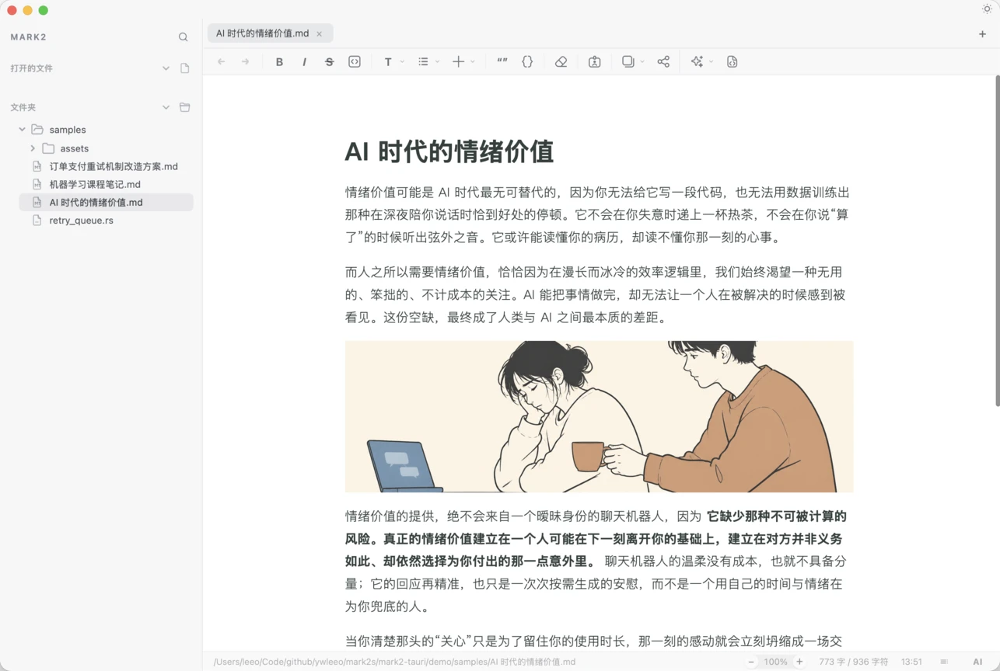
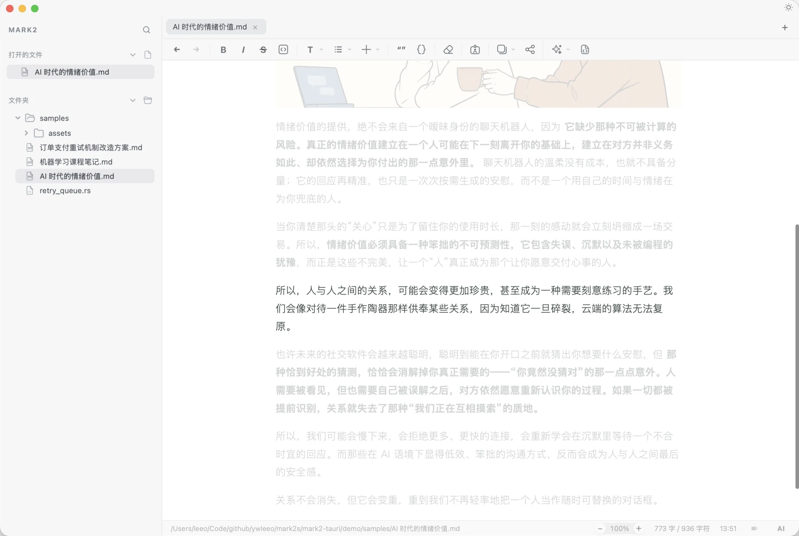
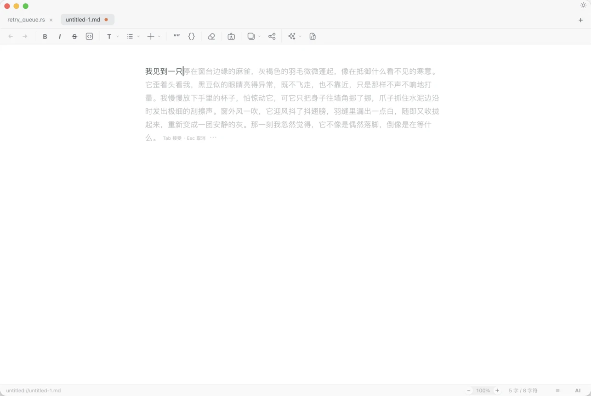
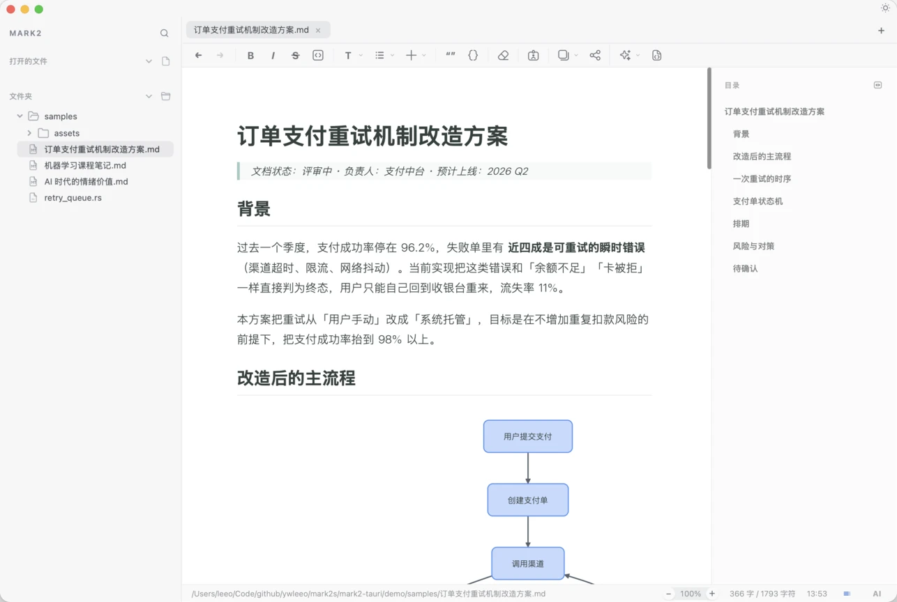
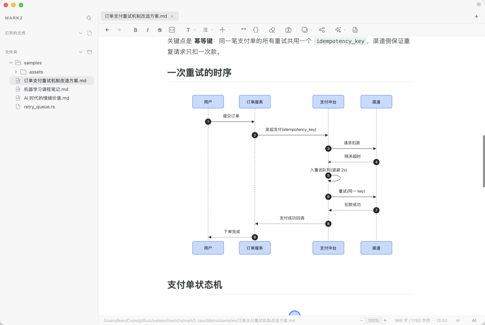
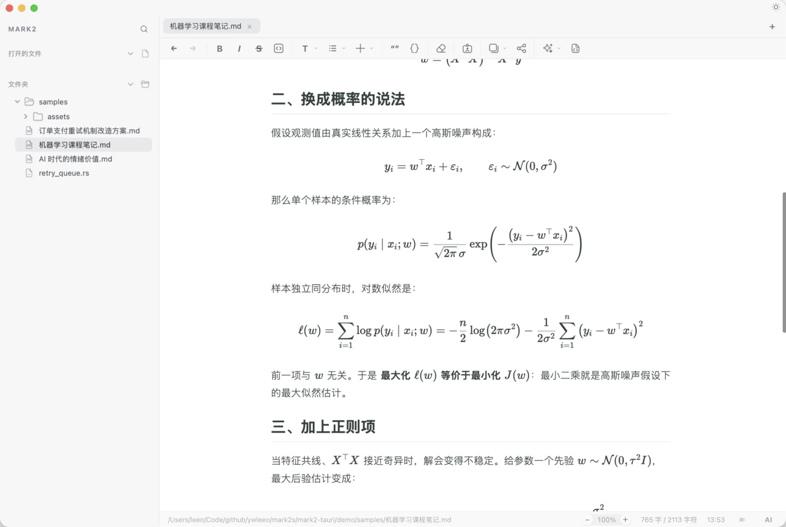
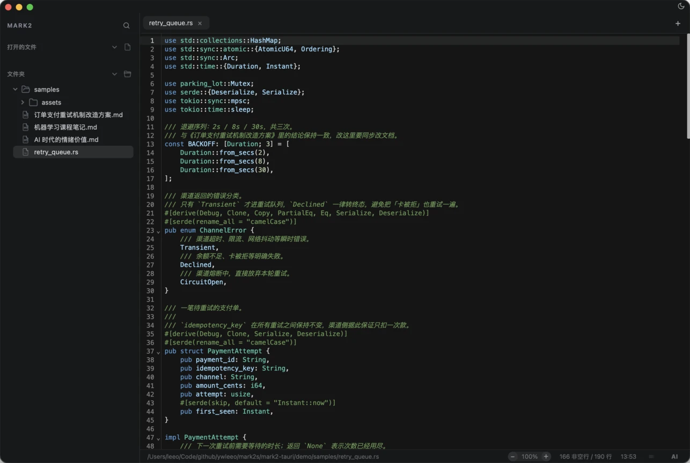
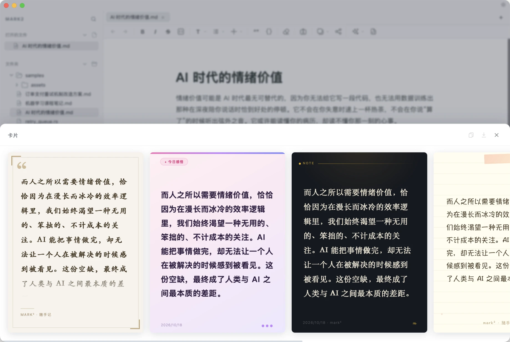

为独立开发者、技术作者和内容创作者设计的 Markdown 工作区。把 PDF、代码和写作资料放在手边，写成技术方案、教程或文章。需要时用 AI 修改，再导出分享。
同一套文档，两种工作方式。在「设置 → 通用 → 整体皮肤」里切换，皮肤只改变布局、排版气质和配色，不动你的文件。
像管项目一样管文件。
左侧是打开的文件和文件夹树，顶部是标签页，适合在一个目录里来回穿梭：写技术文档、整理资料库、边看代码边记笔记。

最近写过的稿子，一眼就能找到。
侧边栏变成一个「我的文档」文稿库，主栏隐藏标签页，一次只对着一篇稿子。文稿按最近写作排序，显示的是正文标题而不是文件名——找稿子靠的是你写了什么。
两套皮肤各自记住自己的配色选择，切回去还是你熟悉的样子。
界面模式决定「怎么管」，写作模式决定「怎么写」。两者都在「视图」菜单里，可以单独开，也可以叠加。

当前段落保持正常显示，其余内容淡出，视线不会被上下文拽走。Markdown 和代码视图都支持。
正在写的那一行始终停在屏幕中央，长文写下去时不用一直低头看屏幕底部。
读资料、写初稿、整理结构、修改和分享，都可以在同一个工作区完成。
把 PDF、代码、图片和表格放在草稿旁。边看实现边写技术说明，或把课程材料整理成自己的笔记。
用可视化 Markdown 写教程、说明或文章，随时切回源码。长文写到一半，可以用专注和打字机模式继续往下写。
用经典模式在项目文件之间切换，用编辑部模式专心处理一篇稿子。两套布局都使用你原来的本地文件。
内嵌 KaTeX 公式与 Mermaid 流程图、时序图、状态图、甘特图，写技术内容、论文、笔记都顺手。
在光标处续写，对选中文字润色或翻译，也可以围绕当前文稿对话。AI 是可选功能，使用你自己的服务商与 API Key。
导出成稿，或把一段文字做成图片卡片。需要链接时，可以用自己的 GitHub Token 生成 Gist 页面。
写作、阅读、AI 协作和卡片导出，都在一个轻量工作区里。






写作工具最该做好的事，是让你敢放心地写下去。
后台保存恢复副本，异常退出后重启会提示找回未保存的文稿；恢复只放回编辑器，不会直接覆盖磁盘文件。
「文件 → 版本历史」可以预览这篇文档的历史版本，恢复后先成为未保存修改，确认内容再保存。
在已打开的文件和文件夹里全文搜索，支持区分大小写、全字匹配和正则，结果直接高亮跳转。
保存在独立保险箱内的条目采用 AES-256-GCM 加密，主密钥由系统钥匙串保管。
想先试试？仓库里的 demo/showcase/zh/ 放了几篇样稿：文章、技术方案、课程笔记和一个代码文件，直接用 Mark2 打开这个文件夹即可。
Mac App Store 版包含全部功能，无订阅。适用于 Apple Silicon Mac，需 macOS 13 或更高版本。使用 AI 需自备 API Key，服务商费用另计。